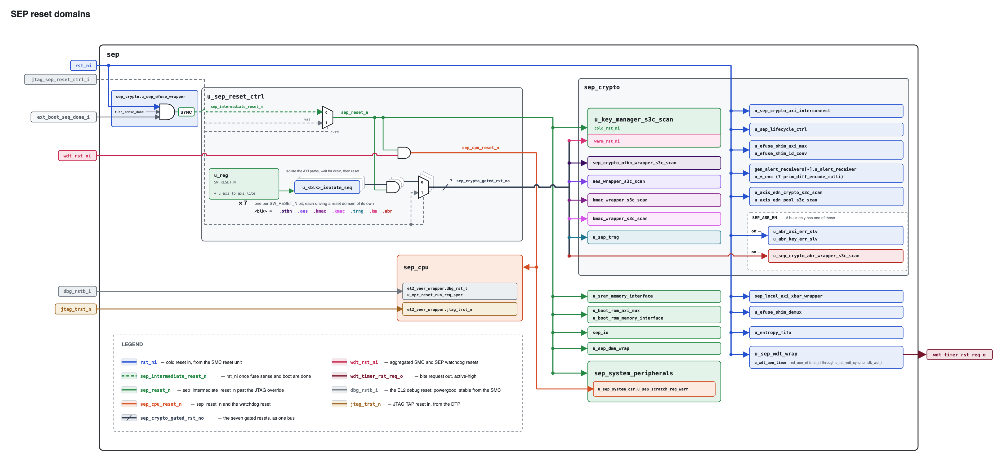
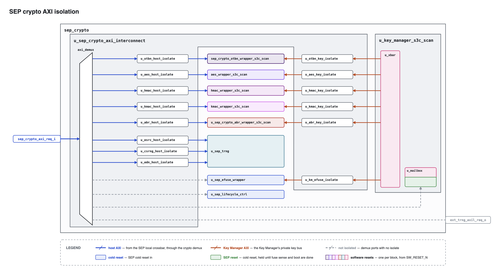

SEP Reset Controller
The SEP Reset Controller provides software-controllable resets for the Key Manager, crypto accelerators, and internal TRNG complex. It is accessible via AXI4 at generated base address 0x1080_3000.
Figure 1 shows the reset domains controlled by the SEP Reset Controller.

Figures and tables: Figure 1.
1. Software Reset Register
Table 1 defines the software reset controls and their reset values.
| Bit | Field | Access | Default | Description |
|---|---|---|---|---|
0 |
km_sw_rst_n |
RW |
0 |
KM reset (0=assert, 1=release) |
1 |
otbn_sw_rst_n |
RW |
1 |
OTBN reset (0=assert, 1=release) |
2 |
aes_sw_rst_n |
RW |
1 |
AES reset (0=assert, 1=release) |
3 |
hmac_sw_rst_n |
RW |
1 |
HMAC reset (0=assert, 1=release) |
4 |
kmac_sw_rst_n |
RW |
1 |
KMAC reset (0=assert, 1=release) |
5 |
trng_sw_rst_n |
RW |
1 |
Shared ESRC + CSRNG + EDN reset request (0=assert, 1=release) |
6 |
abr_sw_rst_n |
RW |
1 |
Adams Bridge reset (0=assert, 1=release) |
On power-up, SW_RESET_N resets to 0x7E: KM is held in reset, while OTBN,
AES, HMAC, KMAC, the TRNG, and Adams Bridge are released. The SEP host firmware
writes 1 to release an IP from reset and writes 0 to request its software
reset.
Figures and tables: Table 1.
2. Isolation and Reset Sequencing
Each SW_RESET_N bit drives a per-domain sequencer that isolates the domain’s
AXI paths before asserting its reset, so no transaction is in flight when reset
asserts. Figure 2 shows the isolated paths.

A software reset proceeds as follows:
-
Firmware writes
0to the domain’sSW_RESET_Nbit. -
The sequencer requests isolation on the domain’s paths. New transactions on them complete with SLVERR and read data
0x1501A7ED. -
Each isolate unit drains its accepted transactions, then reports isolated.
-
Once all of the domain’s paths report isolated, the domain’s reset asserts.
-
Firmware writes
1. Reset and isolation are released together.
Table 2 lists the paths each domain isolates.
| Domain | Paths isolated |
|---|---|
OTBN, AES, HMAC, KMAC, Adams Bridge |
Host path and Key Manager key path |
Key Manager |
All five key paths and the eFuse path |
TRNG |
ESRC, CSRNG, and EDN host paths |
A key path isolates when either endpoint is reset, so neither end can enter reset mid-transfer.
The Key Manager mailbox, eFuse wrapper, lifecycle controller, and external TRNG
ports are not isolated. None of these targets has its own software reset
domain; the mailbox’s SEP-facing side is in the Key Manager’s cold domain. No
SW_RESET_N request can therefore reset one mid-transaction.
The sequenced resets are ANDed with sep_reset_n, which holds every IP in reset
until eFuse sensing completes during boot. JTAG can drive sep_reset_n in
place of the eFuse reset through the SEP slice of the IC_RESET TDR (see
IC_RESET Overrides in the DTP chapter), which releases it on a part
whose fuse sensing does not complete. The per-IP JTAG override muxes are
applied last, allowing debug to force reset without waiting for isolation.
3. Resetting the Key Manager
The sequenced Key Manager reset drives the Key Manager’s warm reset, which restarts its CPU and volatile state but leaves its cold domain intact. That domain includes the SEP-facing side of the mailbox, so the SEP host can still reach the mailbox during the reset.
A soft reset requested through the Key Manager’s SOFT_RST_CODE register
takes the same warm path without isolation. None is needed: the Key Manager
CPU is the only master on its key and eFuse paths and completes each access
before issuing the next, so no transaction is in flight when it writes
SOFT_RST_CODE.
4. Resetting the TRNG
The TRNG reset bit controls one reset domain containing the entropy source, CSRNG, EDN, and DRBG endpoint state. ESRC, CSRNG, and EDN occupy three independent demux ports, so the TRNG sequencer isolates all three host paths and does not assert the TRNG reset until all three report isolated. Reset and isolation are released together.
The fabric entropy-pool AXI responder is not reset, so accesses remain responsive. While the TRNG reset is active, both post-mux EDN adapters and the pool synchronously clear their pending and buffered state, including the pool’s half-packed word, FIFO contents, and fill-stall state.
Consumers are not part of the reset coordinator. Native EDN requests from AES, KMAC, and OTBN receive no acknowledgement while the post-mux adapter is clearing, remain asserted, and are serviced with fresh entropy after the chain restarts. Software may wait for those consumers to become idle and hold them in reset when policy requires aborting in-flight operations, but that is not required to assert the TRNG reset.
The Key Manager stream has no post-mux adapter, so TRNG reset does not scrub it. If the DRBG sampler is requesting or assembling a word when the reset asserts, the next DATA read can mix leftover bytes with new beats, or the sampler can flag a stream error. The SEP host must keep the Key Manager idle before asserting the TRNG reset. Holding KM in software reset is sufficient; hardware does not enforce the ordering.
Following reset release, software reprograms ESRC, waits for startup health testing, locks the certified configuration, instantiates CSRNG, and enables EDN. Consumers are released only after fresh endpoint/pool progress is observed.